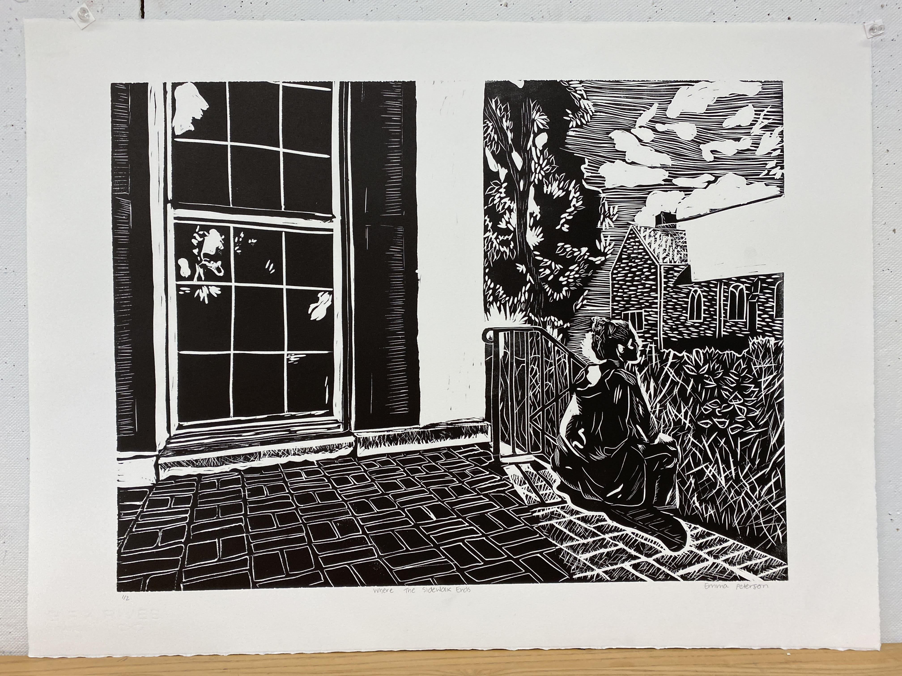
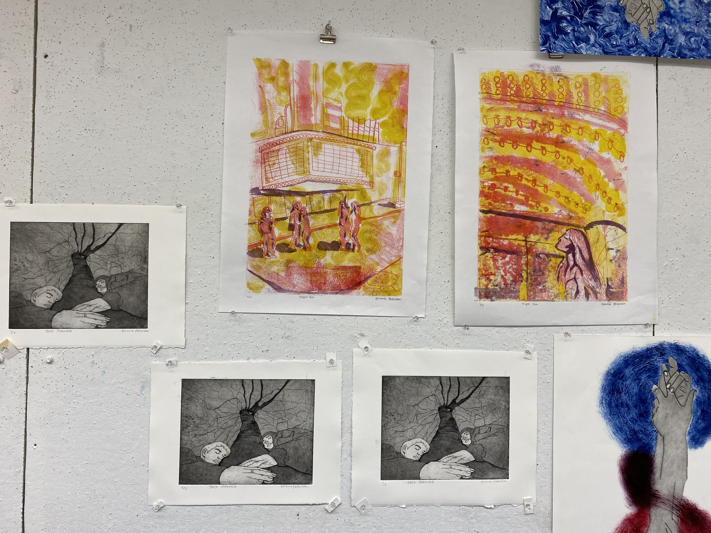
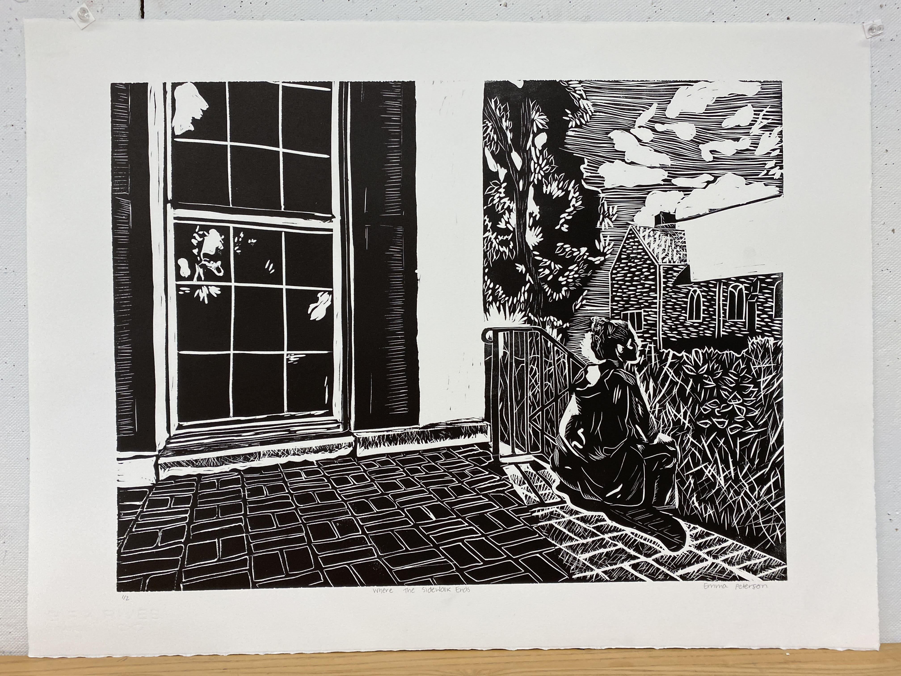
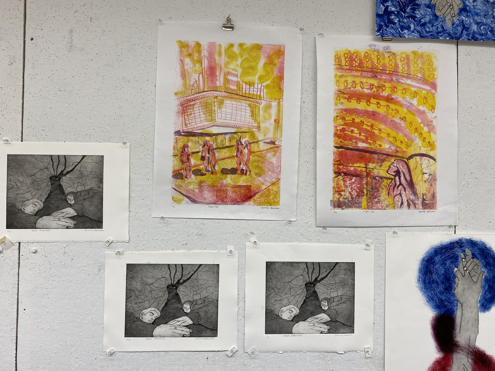

In my time at the Stamps School of Art and Design, I took a printmaking course with Lee Marchalonis, where I learned relief and intaglio printmaking techniques.
 



Inspiration Images
I took inspiration from many famous printmakers.